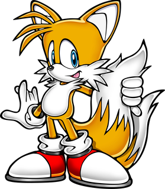
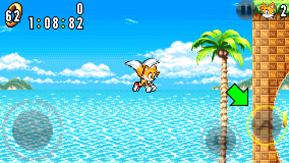
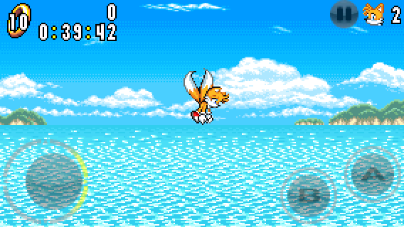
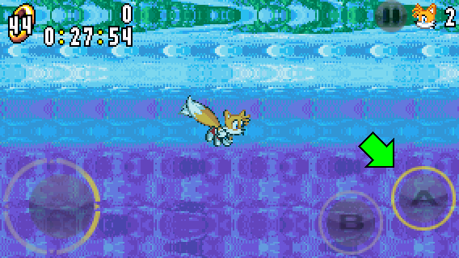
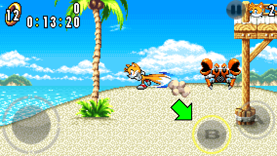
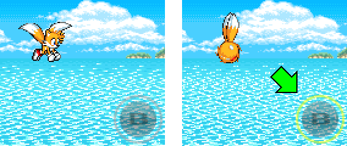
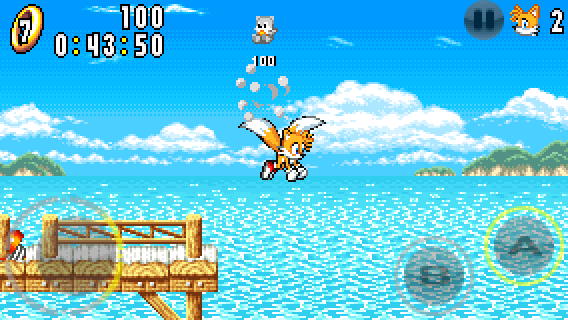
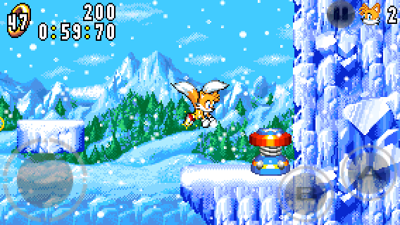

Miles "Tails" Prower
Character Description

BIOGRAPHY:
Tails is a gentle fox with 2 tails who happens to love robots. He can fly by making his tails spin like helicopter blades.
BRIEF GAMEPLAY DESCRIPTION:
Tails plays like in other Sonic games. With his ability to fly, Tails can be the preferred character of choice for beginners.
Unique Abilities

PROPELLER FLIGHT:
During a jump, press the A button once more to start flying.
Press the A button in repeat sessions while flying to ascend higher.

However, Tails can only fly for a limited amount of time. If you make him fly for too long, he will be tired and you won't be able to ascend during the flight.

SWIMMING:
Tails can also dog-paddle underwater. Press the A button while jumping to start swimming.
Swimming works just like flying, except Tails doesn't use his tails to attack.

TAILS ATTACK:
Press the B button to make Tails attack by whipping his tails.
This allow Tails to attack in front of him while standing still or moving slowly.

NEW! FLIGHT CANCELLING:
While flying, press the B button to make Tails stop flying and fall off by spinning.
Once you have cancelled your flight, you won't be able to fly again until Tails lands.
Also, you can't cancel your flight while Tails is tired.
Gameplay Tips

ATTACKING WHILE FLYING:
Tails can attack foes and break item boxes with his tails while flying. While flying, touch your target from below or next to it.
This technique doesn't work underwater, as Tails doesn't use his tails while swimming.

FIND THE SPECIAL SPRINGS:
To find the Special Springs easily, it's recommended to play as Tails.
Since Tails has the ability to fly, not only you can search in places easier, but you can also skip steps and even go back to the intended path after falling off from places that the other characters can't go back.